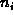
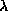
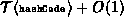

Data Structures and Algorithms
with Object-Oriented Design Patterns in Java
Data Structures and Algorithms
with Object-Oriented Design Patterns in JavaThe previous section has shown that in the worst case, the running time to insert an object into a separately chained hash table is O(1), and the time to find or delete an object is O(n). But these bounds are no better than the same operations on plain lists! Why have we gone to all the trouble inventing hash tables?
The answer lies not in the worst-case performance,
but in the average expected performance.
Suppose we have a hash table of size M.
Let there be exactly n items in the hash table.
We call the quantity  the load factor .
The load factor is simply the ratio
of the number of items in the hash table to the array length.
the load factor .
The load factor is simply the ratio
of the number of items in the hash table to the array length.
Program  gives the implementation for
the getLoadFactor method of the AbstractHashTable class.
This method computes
gives the implementation for
the getLoadFactor method of the AbstractHashTable class.
This method computes  by calling the getCount method
to determine n and the getLength method to determine M.
by calling the getCount method
to determine n and the getLength method to determine M.
Program: AbstractHashTable class getLoadFactor method.
Consider a chained hash table.
Let  be the number of items in the  linked list,
for
linked list,
for  .
The average length of a linked list is
.
The average length of a linked list is
The average length of a linked list is exactly the load factor!
If we are given the load factor , we can determine the average running times for the various operations. The average running time of insert is the same as its worst case time, O(1)--this result does not depend on . On the other hand, the average running time for withdraw does depend on . It is since the time required to delete an item from a linked list of length is .
To determine the average running time for the find operation, we need to make an assumption about whether the item that is being sought is in the table. If the item is not found in the table, the search is said to be unsuccessful. The average running time for an unsuccessful search is
On the other hand, if the search target is in the table, the search is said to be successful. The average number of comparisons needed to find an arbitrary item in a linked list of length is
Thus, the average running time for a successful search is
So, while any one search operation can be as bad as O(n), if we do a large number of random searches, we expect that the average running time will be . In fact, if we have a sufficiently good hash function and a reasonable set of objects in the container, we can expect that those objects are distributed throughout the table. Therefore, any one search operation will not be very much worse than the worst case.
Finally, if we know how many objects will be inserted into the hash table a priori, then we can choose a table size M which is larger than the maximum number of items expected. By doing this, we can ensure that . That is, a linked list contains no more than one item on average. In this case, the average time for withdraw is  and for find it is .
 Copyright © 1998 by Bruno R. Preiss, P.Eng. All rights reserved.
Copyright © 1998 by Bruno R. Preiss, P.Eng. All rights reserved.